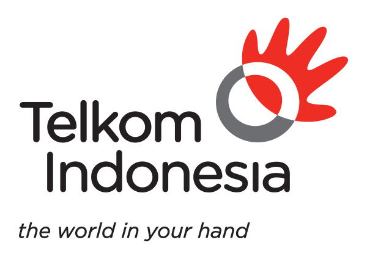

I am a fresh graduate who always likes to learn new things, and can
work individually or as a team. I am also able to work well and
under pressure. i'm enthusiast to Web Programming Development. I'm
also interested in learning Digital Marketing and Copywriting
Education
Background of my education
Computer Network Engineering
Graduate : 2014
Telecommunication Engineering
Graduate: 2020
Organization Experience
During college I was active in several activities that could make me
develop my soft skills
UKKSU (Unit Kesenian dan Kebudayaan Sumatera Utara) Telkom
University
UKKSU CAMP EVENT
As chief Executive event
Duration : From October 2015 until January 2016
Tim Tari UKKSU
As member of Tim Tari Ukksu
Duration : From April 2015 to November 2015
PMK (Persekutuan Mahasiswa Kristen) Telkom University
As a Vice President of this Organization
Duration : From February 2017 to January 2018
Job Description :
PIC of Bible Camp 2017 Event
PIC of Kebaktian Padang 2017 Event
PIC Of Berbagi Kasih di Jalanan Event
Work Experience
During my education life at school and college, I took part in
several internships in companies with the aim of helping to increase
my experience and hard skills
Customer Care at PT Telkom Pematang Siantar

During school I participated in internship activities held by
the school, and during my internship as Customer Care I had the
following responsibilities
learn about the market of speedy instan card users
learn about customer needs for instant speedy cards in the
telkom area
learn to sell speedy instan card by telephone and sales in
person
Project Quality at PT INTI Bandung
During college I participated in internship activities held by
the University, and during my internship as Project Qualitu I
had the following responsibilities
Learn about Project TITO
Learn about fiber optic and copper networks
Contributor Writer at Hipwee Media Platform Digital
During college until now I have been actively writing article
content about young people and my opinions and experiences. On
Hipwee, many of my articles have been published, if you are
willing, you can visit
My Profile